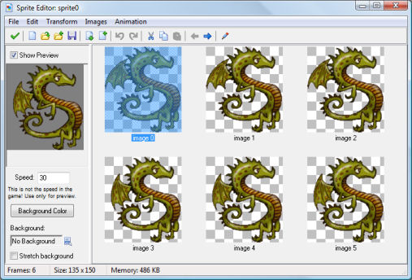

Editing your sprites
Up to now we loaded our sprites from files. It is though also possible to
create and in particular modify them within Game Maker. To do this,
open the sprite property window by double clicking on one of your sprites
(or by creating a new one). Now press the button labeled Edit Sprite.
A new form will appear showing all the subimages that make up the sprite.
The sprite editor form will look as follows:

At the right you see the different images that make up the sprite. Note that
in Game Maker all subimages of a sprite must have the same size. At
the left an animation of the sprite plays. (If you don't see the animation,
check the box labeled Show Preview.) Below the preview you can change
the speed of the animation and the background color. Also you can select one
of the backgrounds in your game and whether it must be streched. In this way you can
get an idea of what the animation will look like in the game. (Note that
this speed is only for preview. The speed of the animation during the
game depends on the room speed.)
The sprite editor contains many commands to create and change the sprite.
These are all given through the menus. (For some there are buttons on the
toolbar.) Some commands work on individual images. They require that you
first select a subimage with the mouse.
File menu
The file menu contains a number of commands related to loading and saving sprites.
- New.
Creates a new, empty sprite. You must indicate the size of the sprite.
(Remember, all images in a sprite must have the same size.)
- Create from File.
Creates the sprite from a file. Many file types can be used.
They all create a sprite consisting of a single image, except
for animated GIF files that are split into the subimages and strips
that have an name ending with _stripXX. When selecting a file
you can indicate whether the image should be opaque, whether to
remove the background, and whether to smooth the edge. You can select
multiple images which will then all be loaded. They should preferably
have the same size, otherwise, their canvas sizes will be adapted.
- Add from File.
Adds an image (or multiple images) from a file to the current sprite. If the
images do not have the same size you can choose where to place them
or to stretch them. You can select multiple images which will then
all be loaded. They must preferably have the same size.
- Save as PNG File.
Saves the sprite as a strip in a PNG file. When the sprite has multiple
subimages the text _stripXX with XX the number of subimages is automatically
appended.
- Create from Strip.
Allows you to create a sprite from a strip. See the next section for more information.
- Add from Strip.
Use this to add images from a strip. See the next section.
- Close Saving Changes.
Closes the form, saving the changes made to the sprite. If you don't
want to save the changes, click on the close button of the form.
Edit menu
The edit menu contains the following commands:
- Undo.
Undo the last change. The last 16 changes can be undone.
- Redo.
Redo the last undone change.
- Cut.
Cut the currently selected subimage to the clipboard. You can edit or use the
subimage in a different program this way. However, the transparency information
might be lost.
- Copy.
Copy the currently selected subimage to the clipboard.
- Paste.
Paste the image on the clipboard as a new subimage. When it has not the correct
size you should indicate how to change this. When the image came from a different
program, transparency information might be lost.
- Erase.
Erase the current, or all images to a particular color. A form open in which you can
select the color and the opacity (alpha) value. A preview of the result it shown. You
can indicate whether to erase all images or only the current one.
- Delete.
Delete the currently selected subimage.
- Move Left.
Move the currently selected subimage one position to the left in the sequence.
- Move Right.
Move the currently selected subimage one position to the right in the sequence.
- Add Empty.
Add a new empty subimage at the end of the sequence.
- Insert Empty.
Insert a new empty subimage before the currently selected subimage.
- Edit.
Edit the currently selected subimage using the built-in image editor.
- Set Tranparency Background.
Here you can indicate how the transparent area of the sprites should be shown in the
sprite editor. You can either use the (default) block pattern, or a color that you can change
by clicking on the color box.
Transform menu
In the transform menu you can perform a number of transformations on the images. For most of them
you can choose whether to apply them only to the current sub image or to all images.
- Shift.
Here you can shift the image(s) an indicated amount horizontally and vertically.
- Mirror/Flip.
Mirror the image(s) horizontally and/or flip them vertically.
- Rotate.
You can rotate the image(s) 90, 180 or 270 degrees, or an arbitrary
amount.
- Scale.
This command scales the image(s) (but not the image size!). You can indicate
the scale factor and whether to scale horizontally and/or vertically.
- Skew.
This command skews the image(s) horizontally and/or vertically with a given amount.
- Resize Canvas.
Here you can change the size of the canvas. You can also indicate where the
images are placed on the new canvas.
- Stretch.
Here you can stretch the images into a new size. You can indicate
the scale factor and the quality.
- Crop.
This makes the images as small as possible. This is very useful because the
larger the images, the more video memory Game Maker will use.
You can indicate the size of a transparent border around the images.
If you provide a negative value, the outside of the images will be cut off.
Images menu
In the images menu you can perform a number of operation on the images. Some of these
are only available in the Pro Edition.
- Cycle Left.
Cycles all images one place to the left. This effectively starts
the animation at a different point.
- Cycle Right.
Cycles all images one place to the right.
- Black and White.
Makes the image(s) black and white (that is, grayscale).
- Colorize.
Here you can change the color (hue) of the images.
Use the slider to pick the new hue. When you indicate to shift the
hue the colors are shifted over the amount indicated giving rather interesting
effects.
- Colorize Partial.
Here you can change the color (hue) of part of the images. You can
select the old hue and a tolerance around it and then indicate the new
hue with which to replace this range of colors. This can be used
for instance to change only the color of the shirts of players. You can pick the old
hue also by clicking in the left image.
- Intensity.
Here you can change the intensity by providing values for the color
saturation and the value of the new images.
- Invert.
Inverts the colors in the images.
- Make Opaque.
Remove all transparency information from the images, making them opaque.
- Erase a Color.
You can select a color (either by clicking on the color box or by clicking in the left image.
Also you specify a tolerance. All pixels with a color close the the selected color will be
made transparent.
- Smooth Edges.
Smooth the edges around the opaque part of the image(s) somewhat to make them look nicer.
(A stronger effect can be created by using Blur but only blurring the transparency; see below.
- Opacity.
Here you can change the opacity (transparency) for the whole image. You can either set it
relative to the current opacity or absolute. (Fully transparent pixels always stay fully
transparent.)
- Set Alpha from File.
You select an image. The lightness of the pixels of that image will be used as transparency value.
Black pixels will lead to completely transparent pixels, while white pixels will lead to opaque
pixels. When the image does not have the correct size it will be stretched.
Only available in the Pro Edition.
- Fade.
Here you specify a color and an amount. The pixels in the image(s)
are now faded towards this color with the given amount.
- Blur.
By blurring the images the colors are mixed a bit, making it more vague. You can select a
small, medium, or large blur. Also you can select whether to blur the color values and/or
the transparency values. Only blurring the transparency values is a nice way to smooth the
boundary of the images.
- Sharpen.
This is sort of the reverse of blurring. The image will be made more sharp, enhancing the
edges. You can do a subtle sharpening or a strong sharpening. The special sharpening puts
additional empasis on the edges, leading to a funny effect. You can sharpen the color
values and/or the transparency values.
- Outline.
Create an outline around the image. You are asked for the color and a thickness of the outline.
You can also indicate to place the outline inside the image. You can indicate whether to
remove the image itself, just keeping the outline, and whether to smooth the outline.
Only available in the Pro Edition.
- Shadow.
Create a shadow behind the image. (This will only work when the image is partially transparent.)
You indicate the color of the shadow and the opacity. Also you indicate the relative position
of the shadow. Finally you can indicate whether it should be a soft or a hard shadow.
Only available in the Pro Edition.
- Glow.
Create a colored glow around the image.
You indicate the color of the glow, the opacity and the thickness.
You can also indicate to place the glow inside the image.
Only available in the Pro Edition.
- Buttonize.
Turn the image(s) into a button. You specify the color of the button and the opacity. Also you
must indicate the thickness of the button boundary and whether it should be smooth or not.
Only available in the Pro Edition.
- Gradient Fill.
Adds a gradient fill to the image(s). You specify the two colors of the fill, the opacity,
and the kind of fill. Default the image is replace by the gradient although the transparency is
maintained. By unchecking the Replace box the gradient is blended onto the image. By checking
the Change Transparency box the alpha value of the original image is changed as well. You
can create great effects. For example, make an image black-and-white and then blend a gradient
on it. Only available in the Pro Edition.
You will have to experiment with these commands to get the sprites you want.
Animation menu
Under the animation menu you can create new animated sprites out of the current sprite.
There are many options and you should experiment a bit with them to create the effects
you want. Also don't forget that you can always save an animated sprite and later add it to
the current one. Also you can always add some empty images and delete unwanted ones.
We will briefly go through the different possibilities.
- Set Length.
Here you can change the length of your animation. The animation is
repeated enough times to create the number of frames you indicate.
(Normally you want this to be a multiple of the current number of frames.)
- Stretch.
This command also changes the length of the animation. But this time,
frames are duplicated or removed to get the right number. So if you
increase the number of frames the animation goes slower and if you
decrease the number it goes faster.
- Reverse.
Well, as you could guess this reverses the animation. So it is played backwards.
- Add Reverse.
This time the reverse sequence is added, doubling the number of frames.
This is very useful for making an object go left and right, change color
and return, etc. You sometimes might want to remove the double first
and middle frame that occur.
- Translation Sequence.
You can create an animation in which the image slightly translates in
each step. You must provide the number of frames and the total amount
to move horizontally and vertically.
- Rotation Sequence.
Creates an animation in which the image rotates. You can either choose
clockwise or counterclockwise rotation. Specify the number of frames and
the total angle in degrees (360 is a complete turn). (You might need to
resize the canvas first to make sure the total image remains visible
during the rotation.)
- Colorize.
Creates an animation that turns the image into a particular color.
- Fade to color.
Creates an animation that fades the image to a particular color.
- Disappear.
Makes the image disappear by making it more transparent in each step.
- Shrink.
Shrinks the image to nothing. You can indicate the direction.
- Grow.
Grows the image from nothing.
- Flatten.
Flattens the image to nothing in a given direction.
- Raise.
Raises the image from a given direction.
- Overlay.
Overlays the animation with another sprite or image in a file. You indicate the file
and the image(s) from that file are then placed on top of the current animation.
When the image from the file has a different size it is stretched.
- Morph.
Morphs the animation to an animation or image from a file. Note that
morphing works best if the two animations cover the same area of the
image. Otherwise, halfway certain pixels disappear and others suddenly appear.
In particular the last two commands are very powerful. For example, to blow
up an object, add a number of copies and then a number of empty frames.
Then overlay it with an explosion animation. (Make sure the numbers of images
match.) Alternatively, morph it to the explosion. With some practice you
can make great sprites.